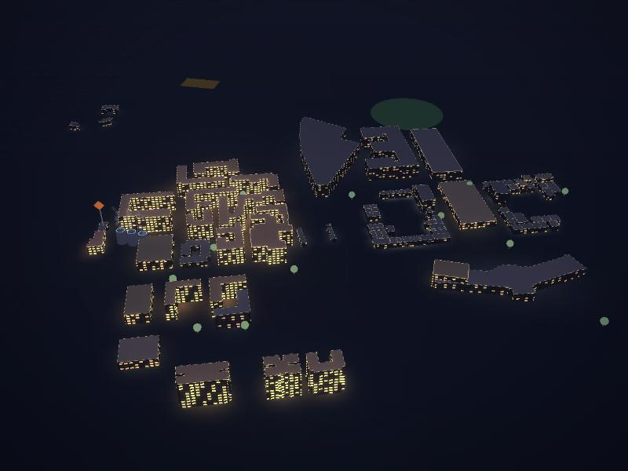
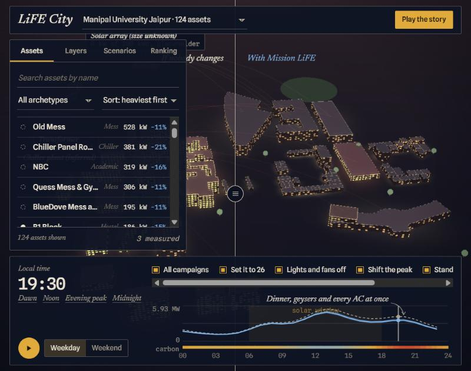
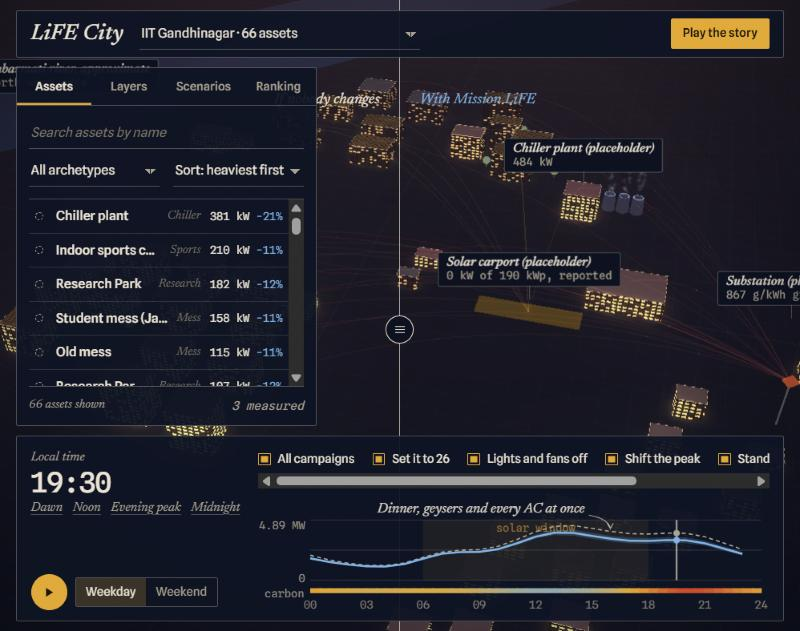
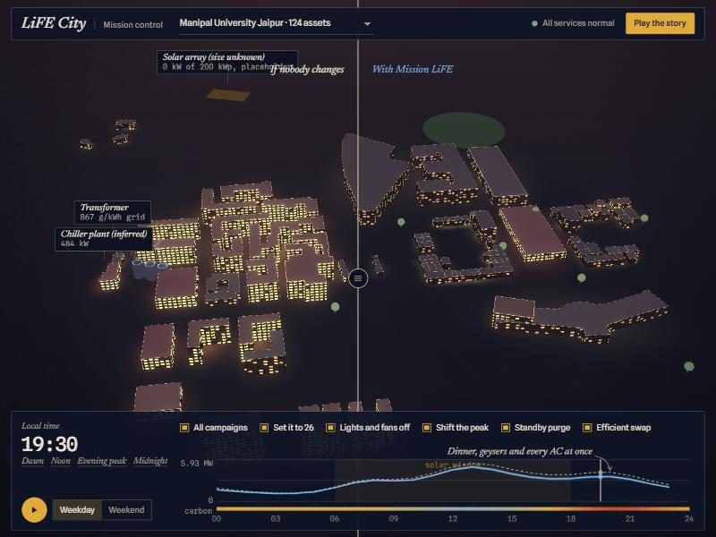

Habits never meet their results
Mission LiFE asks for small, specific changes: 75 individual actions across seven themes. Switching off a fan feels like nothing, because nobody sees where the energy went.

HackCult '26 · IIT Gandhinagar · Track 1, Green Energy and Sustainability
LiFE City is a 3D energy map of two campuses. Drag through a day, switch on Mission LiFE habits, and watch a campus where nobody changed sit beside one where everyone did.
Manipal University Jaipur, from its real footprints, playing a day
Where it stands The front end runs. Loads are modelled, not metered. The backend is designed, not built. What is real and what is not
Nobody can say which building used what, or when. We looked for public building-level or hourly figures for IIT Gandhinagar and Manipal University Jaipur and found none. What people have is a campus total and good intentions.
Mission LiFE asks for small, specific changes: 75 individual actions across seven themes. Switching off a fan feels like nothing, because nobody sees where the energy went.
Evening demand arrives after the sun has gone. A unit saved at the evening peak usually avoids more carbon than one saved at noon, so counting kilowatt-hours alone misses half the story.
Anyone can say a campaign worked. Showing it means comparing against what would have happened anyway, and being plain about which numbers are measured and which are guessed.
Reported figures come from secondary sources and were not read at the original. The list of sources, and what is still unchecked, is in data and sources.
LiFE City draws every building as a lit block on a night map. The brightness of its windows is how much energy it is using. Drag the clock and a day plays out: the hostels wake at dawn, teaching blocks peak by midday, and the whole campus leans on the grid at dusk. All of it comes from our model, and the page says so.
Lit windows follow each building's load. Roofs and ground take their colour from the grid: clean blue, then ochre, then madder as it gets heavier on carbon.
Two campuses share one map. A dropdown filters every number, the ranking and the citizen view to one of them.


Switch campaigns on and the screen splits. On the left nobody changed. On the right everyone did. Drag the divider and see where the difference lands, building by building and hour by hour.

| Habit | What it changes in the model | Modelled effect |
|---|---|---|
| Set it to 26 | Air-conditioning setpoints, and the chilled-water setpoint at the plant. | Cooling down 9 to 20% |
| Lights and fans off | Lighting in empty rooms and corridors. | Down 10 to 25% in teaching buildings, 6 to 16% in hostels and homes |
| Shift the peak | Geyser use, moved out of the evening carbon peak. | 10 to 26% of water heating moved to midday |
| Standby purge | Idle chargers, TVs and computers. | Plug loads down 3 to 9% |
| Efficient swap | Old ACs and fans replaced by star-rated ones. The old units become e-waste. | Cooling down 4 to 12%, lighting 4 to 10% |
Placeholder These ranges are low, mid and high cases we chose. The next step is to tie each habit to its official Mission LiFE action and a cited effect size.
A solid outline marks a building with readings. A dashed outline marks one we modelled. Today almost every building is dashed, and the map shows it. As real readings arrive, buildings turn solid.
Neighbourhoods are scored by what they would save times the share of people who take part, so a small hostel can beat a big one. The citizen view is one resident's phone: tick the habits you did and the campus responds.
A building is a row. A building type is a row. A campaign is a row. Adding a block, a new kind of building or a whole campus is new data, not a new release. Adding Manipal University Jaipur proved it: 124 rows and one entry.
| Change | How it is added | What recomputes | Code changed |
|---|---|---|---|
| A new building | Insert a registry row. The Add building tab does exactly this. | That building only; campus totals by delta | None |
| A new building type | Add an archetype: kW density, component mix, hourly shapes. | Buildings of that type | None |
| A new campaign | Add an entry: target types, component, low, mid and high cut, time profile. | Scenario totals, when asked for | None |
| A new campus | Add a campus entry and rows tagged with its id. | That campus | None |
| A renovation | Bump the building's revision. | That building's cache entry | None |
On 25 October 2026 we added 500 generated buildings to the 190 seeded, 690 in all, in a software-rendered browser.
A single run on a slow renderer, and not a benchmark. It supports one claim. The cost of a change follows what changed, and does not grow with the size of the campus.
campuses · neighbourhoods · buildings · meters · readings · baselines · actions · user_actions · verified_savings · scenarios
Readings are unique per meter and time, and partitioned by month. Every action carries a theme, so water or waste becomes a row and not a rewrite. Verified savings compare a baseline with what was read, and report an interval.
If the database is down, serve the last cached campus snapshot and say so on screen. Ingestion keys make retries safe. Outside calls get timeouts and a cached fallback. Rate and size limits guard every input. The prototype's outage toggle shows what a visitor would see.
Before drawing anything we read what the organisers published: what is scored, how much, and what the finale needs. That changed the plan more than any idea did.
| Criterion | Weight | What we did about it | Today |
|---|---|---|---|
| Technical execution and code quality | 40% | Static checks and a format check on every pull request. Small commits with real messages. | Front end done Backend tests planned |
| System architecture and scalability | 30% | A data-driven registry, memoised simulation with delta totals, a scale test in the page, a service designed on paper. | Prototype done Load test planned |
| UI and UX | 20% | The 3D control room, two campuses, a citizen view, states for failure and for an outage. | Prototype done |
| Innovation and problem fit | 10% | The ghost campus. A map that says what is measured and what is modelled. Mission LiFE energy actions as the campaigns. | Prototype done |
The rules also describe a booth round for finalists. It weighs a live system 35%, code integrity 25%, architectural depth 25% and domain fit 15%, and asks for a deployed app taking real input. A live system is the part we do not have yet.
Green Energy and Sustainability, over Culture and Digital Heritage.
A bill-to-actions screen was too simple. It was a calculator with a chart. The visuals had to carry the idea, so the plan became a living 3D campus.
Plan one was static data and no backend. The rules ask for a live deployed system, real inputs, and a defence of the database, the API and security. Plan two designs a real service, gives engineering most of the hours, and keeps the scene as the hero.
An asset registry, an add-a-building flow, a scale test and a system view, so that more buildings later is a data change and not a rewrite.
Replaced it with a survey sheet drawn at night: flat ruled panels, lamp-lit windows, and colours taken from sandstone and madder.
We had drawn IIT Gandhinagar's Blocks 01 to 29 as academic. Checked against OpenStreetMap they sit along the east side and look residential. We rebuilt on real positions.
Manipal University Jaipur, from its real footprints, behind one dropdown. A new campus really is data.
Split the page into files, added checks and CI. Merging the campuses exposed a graphics buffer bug once there were more than 128 buildings. We found it and fixed it.
The first seven entries happened before the sprint window opened on 23 October at 6:30 PM IST.
We would rather you hear it from us. Every number on the map falls into one of these rows.
| What | Status | Detail |
|---|---|---|
| Building positions, both campuses | Real | OpenStreetMap, read on 22 October 2026. |
| Manipal Jaipur outlines | Real | OpenStreetMap footprints. 83 of the 124 buildings have no name there. |
| IIT Gandhinagar shapes | Placeholder | Boxes at the real positions. The chiller plant, solar carport and substation are labelled guesses. |
| Heights, floors, uses | Placeholder | Chosen to look plausible. Not surveyed. |
| Every load and kW figure | Modelled | From building-type profiles. There is no meter data for either campus. |
| The six "measured" buildings | Invented | Demo flags that show the measured styling. No real meter exists. |
| IIT Gandhinagar solar, 499 kWp | Reported | Secondary sources that disagree with each other. Not verified. |
| Grid carbon curve | Modelled | An invented hourly shape between about 450 and 900 g CO2 per kWh. Not tied to a published factor yet. |
| Tariff and campaign effects | Placeholder | Seven rupees fifty a unit, and the low, mid and high ranges above. |
| Participation and streaks | Invented | Made up to show the ranking and the citizen view. |
| System telemetry and the outage toggle | Simulated | Generated in the page, and labelled as such on screen. |
The API, the schema, ingestion, the simulation model and its tests.
The 3D campus, the ghost split, the camera and the frame rate.
Layout, charts, the resident's phone flow and accessibility.
Deployment, CI, the load test, security, the deck and the video.